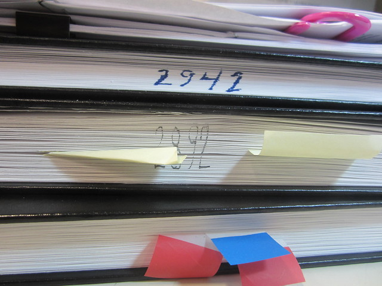
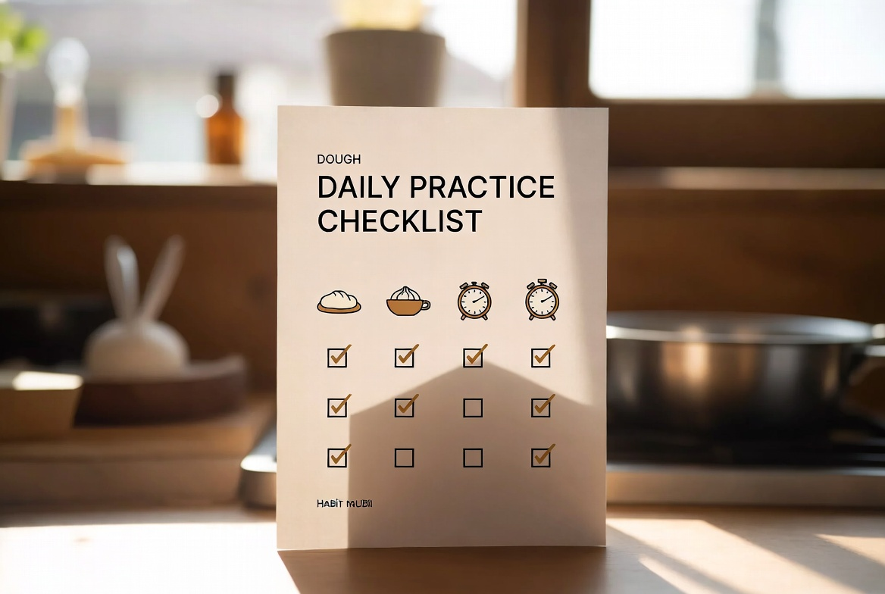

제빵기능사 시리즈
제빵기능사 시리즈 — 6편 목차와 읽는 순서
제빵기능사 준비·시험·합격 경험을 6편으로 나눕니다. 6편 모두 발행. 각 편에서 다룰 내용과 읽는 순서, 시리즈 이후 빵 R&D로의 연결을 정리했습니다.
기능사 시리즈와 빵 R&D 일지
최근 발행·수정 기준
제빵기능사 준비·시험·합격 경험을 6편으로 나눕니다. 6편 모두 발행. 각 편에서 다룰 내용과 읽는 순서, 시리즈 이후 빵 R&D로의 연결을 정리했습니다.

밤식빵 R&D 1~12차·실전 정리·중간 정리를 어떤 순서로 읽으면 좋은지 안내합니다. 일지와 가져갈 수 있는 정리 글을 구분합니다.

밤식빵 R&D 1~8차 일지를 따라 하기 어렵다면 이 글부터 보세요. 토핑 시점·수분·보관·시럽·재료·브러싱에서 확인된 것과 아직 남은 것을 표처럼 정리했습니다. 레시피가 아니라 집 오븐에서 쓸 수 있는 판단 기준입니다.

2026년 2월 16일, 11차와 비슷한 습도 42% 날에 1차 발효만 56분으로 줄였습니다. 9차(35%·58분)와 비슷한 눌림이 나왔고, 다음 날 겉·속은 10·11차와 유사했습니다.

2026년 2월 9일, 9차·10차에서 맞춘 겨울 조합을 습도 42%인 날에 그대로 재현했습니다. 58분은 저습도(35%) 기준에 가깝고, 이날은 손가락 눌림이 조금 빨랐습니다.

2026년 1월 26일, 9차와 같은 겨울 난방 실내·1차 발효 58분 위에서 보관 전 개방 시간만 비교했습니다. 바로 루즈 백이 겉 건조를 가장 줄였고, 30분 개방은 그 중간이었습니다.
정지석이 정리한 관점·편집 메모
기능사 학원 오븐과 집 오븐은 같은 200°C라도 결과가 달랐습니다. 다이얼 숫자를 믿지 않고 상화 온도·예열 시간·굽기 중 문 열림을 메모에 남기기로 한 이유와, R&D에서도 이어 쓰는 방법을 정리합니다.
2025년 5월 제빵기능사 합격 직후, 밤식빵 R&D를 바로 시작하지 않았습니다. 학원 품목만 가볍게 반복하고 메모 습관을 유지한 한 달이 있었고, 그 이유와 그때 쓴 기준을 적습니다.
밤식빵 R&D와 기능사 글에서 완성 레시피·그램 표를 의도적으로 넣지 않습니다. 제 오븐·반죽량 기준을 그대로 옮기면 어긋날 수 있어서이며, 대신 일지에서 검증된 순서와 판단 기준을 남기기 위함입니다.
시리즈 입문과 목차
밤식빵 R&D 1~8차 일지를 따라 하기 어렵다면 이 글부터 보세요. 토핑 시점·수분·보관·시럽·재료·브러싱에서 확인된 것과 아직 남은 것을 표처럼 정리했습니다. 레시피가 아니라 집 오븐에서 쓸 수 있는 판단 기준입니다.

2025년 6월~8월 밤식빵 R&D 1~5차를 한곳에 모아 비교했습니다. 토핑 시점·수분·보관·시럽 졸임에서 무엇이 나아졌고, 기억과 아직 다른 지점은 어디인지 정리합니다.

2025년 6월, 합격 후 첫 밤식빵 실험 기록입니다. 식빵 반죽은 기능사 때와 동일, 밤 시럽 농도만 변경. 겉은 비슷했지만 속 촉촉함과 밤 식감이 기억과 달랐고, 다음 변수를 정했습니다.

2025년 5월 제빵기능사 시험 당일을 전날 준비·당일 필기·실기 간격·컨디션 관리 순으로 기록했습니다. 합격 직후 바로 한 정리와, 시험 후에야 알게 된 아쉬움도 함께 적습니다.
퇴사 후 빵 터졌음!은 2024년 9월 퇴사 후 제빵기능사에 도전해 2025년 5월 합격한 경험과, 합격 이후 빵을 연구하며 쌓는 실패·노하우를 기록하는 블로그입니다. 퇴사 이야기는 소개에 담고, 본문은 제빵 기능사와 빵 R&D에 집중합니다.
편집·운영
2024년 9월 퇴사 후 제빵기능사를 준비해 2025년 5월 합격했습니다. 어릴 적 동네 빵집의 밤식빵 맛을 다시 만들기 위해, 기능사 이후에도 빵을 연구하며 실패와 수정 과정을 기록합니다.
운영자 소개 보기 →오류 제보, 콘텐츠 관련 문의는 이메일로 연락해 주세요.
onhopetoj@gmail.com